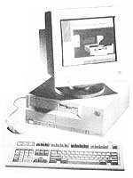

BARTERS & BOOTSTRAPS
For best economy and reliability, buy locally and buy used.
Illustrations: Anne Carter
Be honest with yourself now: Does your home business really need a fullfledged computer-able to run a full range of application programs as discussed in Part 1 of this series? True, computers can manipulate information of all kinds: words, images, figures, and sound. They can send and receive data over phone lines or cellular wireless, control and safeguard your home, start your car, keep your bankbook, surf the Internet, play games and interactive CD-ROMs, and, along with a scanner and laser printer, print with such clarity that they're being used to counterfeit money. But despite mind-boggling amounts of acceptance and acclaim, they can't do it all for your home business, and that's critical to understand from the start.
However, if all you need is to type and file correspondence, a customer list, a small inventory of goods for sale, or perhaps a few filing and accounting figures, you may be better served by a dedicated word processor (WP) costing just a few hundred dollars. The simplest models combine a small computer with a floppy disc drive, a letter-quality printer, a keyboard, and a video monitor into a single desktop unit.
For example: The Brother two-piece WP combines a stand-alone video monitor with a console holding keyboard, disc drive, and a letter-quality printer. Preloaded with word processing software, it sells new for about $250 at Wal-Mart, and for half that used. You can't get a decent computer printer for that price. I'd suggest that few home businesses really need more computing power than a WP offers for the first few years at least.
But, if you have complex accounting ledgers or other forms to create, long reports to write, graphs or charts or pictures to generate, extensive mailing lists to manipulate, or more than a few numbers to crunch; if you are attracted by the ads for "multimedia" computers that incorporate interactive CD-ROM, audio, and TV hookups that offer home/family as well as business applications-or if you just want to play U-Boat or go on-line and navigate World Wide Web-you need a real computer.
A basic but competent computer/printer/software combination will cost around $1,000 used and something over $2,000 new, while a new top-of-the-line business-use outfit goes for $4,500, or about $100 per month if you decide to lease. These prices aren't peanuts for most country business startups, but they're cheap by business investment standards. However, when you add specialized software and accessories, and find that you need ever more electronic data storage, the price begins to rise. And be prepared: No matter how state-of-the-art your new machine is, it will be surpassed in operating speed within months. That's right.
For the record, the current speed-record-holder is probably Apple's Power Macintosh 8100/110 with a 110 MHz Power PC chip, but any number of IBM-standard PC brands are appearing with 120 MHz Pentium chips, 16 megabytes of RAM and onboard CD drives. They are said to be bargains at between $4,000 and $5000 with monitors included. Maybe they are for those with that kind of scratch, but let's scale down quite a ways and start at the bottom.
A Used Computer
For most small businesses, for students, for managing home finances, playing computer games, and accessing on-line services, Pentiums and Macintosh Power PCs are overkill. They may be able to calculate a trajectory to the Moon faster, but not even a whole team of them could increase my fumble-fingered typing speed.
As long as 10 years ago, hard- and software reached a level of optimum capability for normal home and business use ...that is, any good-quality machine dating from 1985 or later will run competent software offering all the speed, memory, and data-storage capacity most of us really need. The hot new versions accomplish the self-same tasks-they just do it a little faster and with a whole lot more inessential bells and whistles.
So, do consider buying used. Many computer hobbyists and image-conscious or leading-edge businesses and researchers think they need new computers every six months. Their trade-ins are barely broken in by that time.
If they've lasted through "burn-in" (or have been repaired during the warranty period), solid-state electronic devices don't wear out. A gently used computer will serve for years-decades-till repairing the few wearing parts such as the cooling fan, disc drives, keyboard, and mouse becomes more costly than buying a new model.
Consider a lightly used machine obtained through a private sale, or a reconditioned computer from a commercial reseller. Your new machine may not offer true "multi - tasking"-the ability to run several full fledged software programs at once, or be able to print, answer the phone, turn off the coffee maker, help plot your novel, and play a computer game all at once. You may not have 256 colors or be able to run the latest versions of popular programs either. But you'll have a solid, competent machine-cheap. Look in the computer magazines for current prices for used computers.
Private computer purchases are not as chancy as buying used cars or appliances, but if you are a novice it's best to take along a friend who is computer-knowledgeable. A really worn computer will have worn looking keys and its drive mechanisms will make a rattly or grinding sound. Look in local "For Sale" periodicals and in the classifieds.
To locate a commercial outlet, look in the computer magazines and in the local Yellow Pages for a "computer recycler" near you. You can get a fully reconditioned and guaranteed Apple SE-30 or an IBM PS2 for about $500. Either machine is built like a truck, and can handle most any small business for its first few years. Younger IBM-style models with 38386 CPUs and Macs with faster 68030s are more up-to-date and more expensive at around $1,000-while the still younger -486/-040 versions are faster yet-and costing $1,500 or so-and necessary if you want to run the newest software.
Used computers come with RAM memory of one or two megabytes and hard drives holding as few as 20 megs. This is gargantuan compared to the early days when we measured memory in kilobytes (thousands) rather than megs (millions). Still, 20-meg hard discs sound puny compared to the 120-to-250-meg drives that are standard today. But, most of that space is taken up by seldom-used features of the latest memory-gobbling software (do you really need footnotes, an index, a variety of page formats, and a choice of 50 typefaces in your word processor?) A 20meg drive running memory-efficient software can hold 10,000 book-sized pages of text or figures. If you need more space, you can store seldom used programs or data you don't use every day on a floppy disc.
Be sure any used machine comes "bundled" with appropriate versions of all the software you expect to need. Get the software data discs and instruction manuals complete-or don't purchase the equipment. You can obtain copies of obsolete programs from resellers or through user groups, but copying them is theoretically illegal-even if the makers have stopped distributing old versions such as the Microsoft Word version 2 that I used happily for years and wish I had back again.
Don't expect to use the latest software on an older machine. Mail-order catalogs and magazine ads-even the promotional blurbs on software packaging itself-too often fail to disclose minimum processor/memory requirements. If you order blind, you can be stuck with software your computer can't use.
Mail-order has become more ethical than it was a decade ago. But, returning goods can be as difficult as the sellers can make it. You see, once opened, returns are a total loss. It costs more to test and repack discs and documentation and replastic wrap the packages than the paper and plastic inside are worth. Be sure you keep copies of all orders and other paperwork. Phone for a return invoice number before sending off a return and mail it with a return receipt or send by courier.
Whatever machinery you get, keeping it up-and-running is the single most important consideration for any computer dependent business. Don't try to service any electronic equipment yourself and don't let the hacker down the road get his paws on it. If you so much as touch a delicate microcircuit without being properly wired to an electrical ground, static electricity on your body can zap through the spiderweb-thin connectors inside chips and fry the computer for good. If it's new enough to be on manufacturer's warranty, simply opening the case may void the guarantee. Find a qualified, established service firm that is officially franchised by the manufacturer.
Why? You'll find that you become totally dependent of the machine. If it's down for more than a day you can be paralyzed. If you have failed to make backup copies of all the correspondence, billing information, and accounts that are stored in the computer's hard drive, a crash can really spoil your day. (Good repair people can salvage most of your data unless the computer self-destructs to the point of ignition-all the more reason to find reliable service before you need it.)
Most large computer centers and many mail-order suppliers service what they sell and will supply a loaner while working on yours (often as not, keeping you waiting for weeks for the correct parts to arrive.) You can load copies of software and data into the borrowed machine and be up-and-running in a few minutes.
But, if you buy your Apple Performa, Compaq Presario or other home/business PC from non-servicing mall retailers such as JC Penney, Sears or Kmart, you may repeat my problems with my first business computer back in the '80s. Manufacturers were jockeying for position, and small, thinly capitalized retailer stores were just beginning to appear in small towns. My DEC "Rainbow," an industrial-quality early eight-bit machine, came from a retailer in a distant town ...who promptly went out of business. No other local retailer/serviceman had so much of heard of a Rainbow 7, but for a while I could drive 65 miles to an industrial service center in a large city. Then the Rainbow was discontinued entirely when its manufacturer, Digital Equipment Co., was temporarily driven from the desktop computer business by the early success of the IBM PC. Parts and repairs for an "orphan" computer suddenly cost a fortune-but, unlike such gone-broke manufacturers as Commodore, Atari, and Osborne, DEC was still solvent and offered service for a reasonable time. But when a hard drive crashed, my replacement cost more than a new Apple-the first time that service problems forced me to buy a new computer. All this happened in less than a year.
The computer business is still volatile and retailers come and go. I suggest that you locate the sales/service outfit nearest to you that's been in business the longest and that shows greatest promise of being around when you need it. Reliable service is more important than the brand of hard or software you end up with.
Mail-Order?
If UPS comes to your valley, you can buy a computer and printer direct from most manufacturers, or from the mail order houses that advertise in the magazines. (Look in supermarkets and magazine racks for Computer Shopper, ZiffDavis's 600-plus-page monthly giant format tome of direct-mail sellers.)
To order by mail, you must know precisely what you want. Order by phone, put it on your credit card, and the machine will be on its way the next day. Save the shipping boxes. If you get the wrong cable, as I did once (making the new machine unusable), you can call the
MO outfit, trot out the Visa again, get a shipping-order number, and you may receive a replacement or loaner from the same UPS driver who accepts your boxed machine for return shipment.
But that's the ideal. I've waited six months for a MO back order and am still trying to trace the MO retailer that sent me a bum program, then disappeared from the magazines, phone book, and Southern California for all I can tell. The program maker is still in business but won't make good on their product because it was sold by someone else.
If you live in the country, obtaining services you can't provide for yourself is a challenge, and relying on a machine as complicated as a computer makes it even more so. I find that in computing, as all else, the simpler the machine, the fewer things there are to go wrong; so think about what you really need a computer for. Start looking for reliable, well-established repair people. Find the most solid-looking mail-order firms advertising in the computer magazines and send off for prices and by-mail service practices.
Apple or IBM? Good question. For now, let me state flat-out that that for ease of learning and operation by a computer novice or non technical type, an Apple Macintosh of any post-1985 vintage is best. For ease of service particularly if you live in the far boondocks-your best bet is a simple, unadorned IBM-style machine assembled from "industry standard" modules and off-the-shelf components that any hacker or radio repairman can replace.
The newest batch of central processing systems (the central chip that does most of the computer's thinking) is just now shipping in quantity. "Super chips," including Intel's Pentium for IBM-standard and Motorola's Power PC for Macintosh, and new operating systems such as IBM's OS/2 offer blinding speed, instant access to whole libraries of data, and will presumably serve as an on-ramp to the much-ballyhooed "information superhighway.' But, moving up the pipeline for introduction the year after next are even faster chips and even more capable software ...and on the drawing boards for the year 2000 are still faster versions ...and, by 2005, we'll see another dimensional leap, and so it'll continue till you can carry your entire business in a Dick Tracy wristwatch that you talk to and that answers in plain English (and that's no fooling!).
So think twice before you let the marketeers talk you into the very latest hot new hardware or software. You will be charged a premium price, you will be serving as an unpaid final-stage product tester, and your results might well be severely compromised by bug-ridden equipment.
For one thing, the premium price you pay for new stuff is a flat-out rip-off. New versions of most software programs are just another layer of frothy frosting on a stale cake. For the first time in 30 years of computer development, the newest super-chips are less complex and expensive than their predecessors. Based on RISC (reduced-instruction-set) technology, they are actually cheaper to make than the mechanically more complex but technically less sophisticated Intel 36000/ Motorola 68000 generation of CPUs.
Each new generation of CPUs promises to run older software, but "native" programs that use their fullbore capability will remain as "vaporware"-promised but not forthcoming-for months or years. For example, Microsoft Windows '95 (incorporating a hot new Internet-connected on-line service) was promised for spring of its namesake year, but was delayed till summer ...then fall ...and now it won't be released till some indefinite time in '96. To keep us enthralled till then is Bob, an interactive program written by Stanford University sociologists and featuring a smiley face that uses a cozy livingroom metaphor, and learns your operating habits, to weasel you into cuddling up with Microsoft.
To so much as load some of the newest software you need at least eight megabytes (eight million bits or "megs" of RAM memory (not to be confused with the permanent data storage that your hard disc is responsible for). But, computers are usually sold with four megs of RAM memory only. With memory chip-scalled SIMMs-priced at about $100 a meg, you can end up paying more for added memory than for the original computer. Unless you are running a NASA moon shot, designing a full-color magazine, or computer generating an animated cartoon. anyone who tells you that you'll need more than eight megs of RAM is lining their wallet with your money.
All new hardware and software needs a period of post-release debugging. Remember last fall (of '94), when the Pentium superchip-subject of massive "Intel Inside" ads by its Fortune 500 maker-was revealed by an outside scientist to contain a bug that could ruin complex computations? Intel knew of the problem, but had done its best to hide the glitch-except to Compac and a few other major customers. When the bad news got out, they did a stonewall act worthy of Nixon/Haldeman/Ehrlichmann. claiming that an error wouldn't occur but once in 27,000 years. When IBM estimated publicly that a spreadsheet could be calculated in error once a month without anyone knowing, the furor persisted. Intel then loftily offered replacements, but only if they felt it necessary. Finally, when even the PC mags ventured to complain timidly, they caved and offered replacements to all buyers. Sulkily, Intel declared a multi-million charge-off and their stock blipped down briefly. Software too is released with undetected bugs. We've just learned that the most popular tax-computation software, Intuit's MacIntax and TurboTax, sold by H&R Block, are both flawed and capable of introducing errors that you would not notice till the IRS sent you a surprise invitation to come in for an audit.
Doesn't this sort of corporate duplicity just gnaw at you? And where are our self-appointed consumer guardians? These days, Ralph Nader is venting his righteous indignation at some obscure trade agreement with Mexico, the Consumer Products Safety Commission is pointing its quivering, bony finger at kiddie car seats, and Science In The Public Interest is appalled and outraged over the Crisis in Public Health posed by cholesterol in movie-theater popcorn (?!). The moral is twofold: Don't fall for frenzied industry promotion and never buy a hard- or software release till its been out for at least a year-so someone else will turn up the bugs. Don't expose yourself to temptation (as I too often have) by reading the computer magazines till you honestly need new equipment. Then, read product reviews as if the reviewers and intimidating lab technicians were totally dependent on manufacturers of the products they review to pay their salaries. They are, of course, though you'd be the last to know.
|
Anne Carter |
 |
|